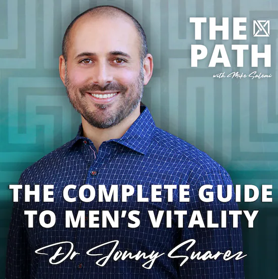

B884 · The Complete Guide to Men’s Vitality
Hi {first_name},
Today on The Path Podcast, we have Dr. Jonny Suarez. Dr. Suarez is a doctor of Chinese medicine and acupuncture, has an extensive background in functional medicine, and is an upper level Chek Practitioner. In this episode, we dive into how to optimize male health and hormones. We talk a lot about things like when TRT is important and when it’s not needed, the importance of proper breathing while we sleep, and the biggest factors that contribute to low testosterone in men.
In Episode #25 of The Path Podcast we discuss:
 Click here to listen on Apple.
Click here to listen on Spotify. Yours in Health, Mike
P.S. I could really use your help with something - to ensure that I am creating content that will help you move the needle in your life, I would be extremely grateful if you could complete a brief survey. Your input will be crucial in shaping the direction of The Path Podcast, new programs, Youtube content, and more. I truly appreciate your help. Click here to complete this quick survey. Thank you for being a part of this journey with me, and once again for your help. |